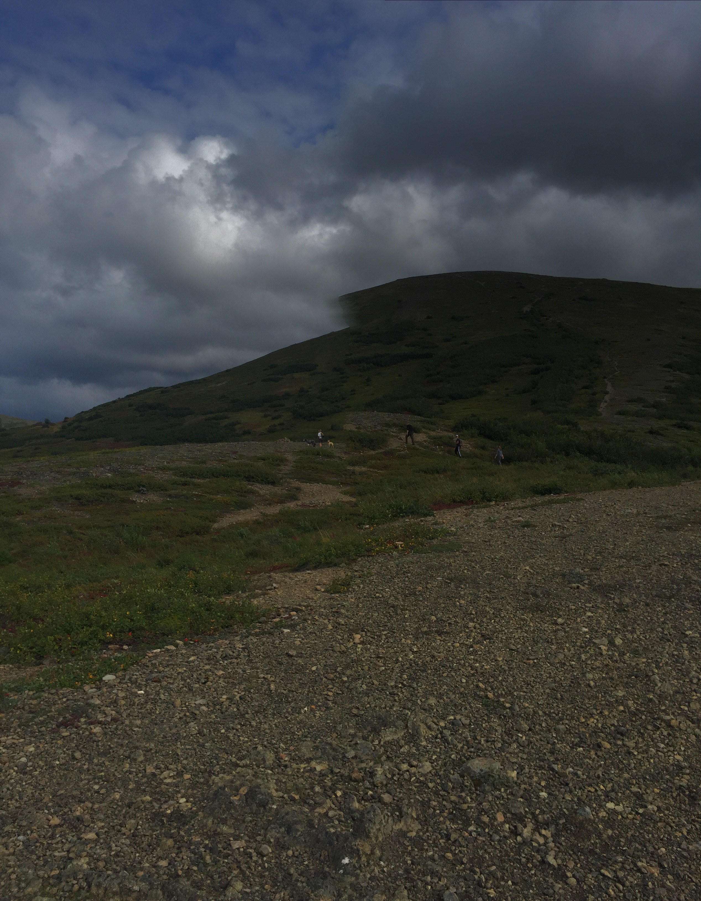

| Portage Lake | 2.7 miles each way | Moderate |  |
Located in Whittier - about 1.5 hr drive | This trail takes you to Portage Glacier. It is a cold lake and I don't recommend swimmming, but a beauitful hike and the best way to see the glacier. |
| Symphony Lake | 5.5 miles one way | moderate- rocky section near the lake |  |
Located in Eage River - about 30 min. drive | A beautiful walk. The lakes are swimmable and there are places for overnight camping if interested. |
| Rabbit Lake | 4.4 miles each waytrip | moderate | Located in South Anchorage | A great day hike, some people will haul gear to camp the night. | |
| Gold Cord Lake | 1 mile each way | moderate |  | Located in Hatchers Pass - about 1.5 hr drive | Right next to Independence mine and short hike to a small lake. |